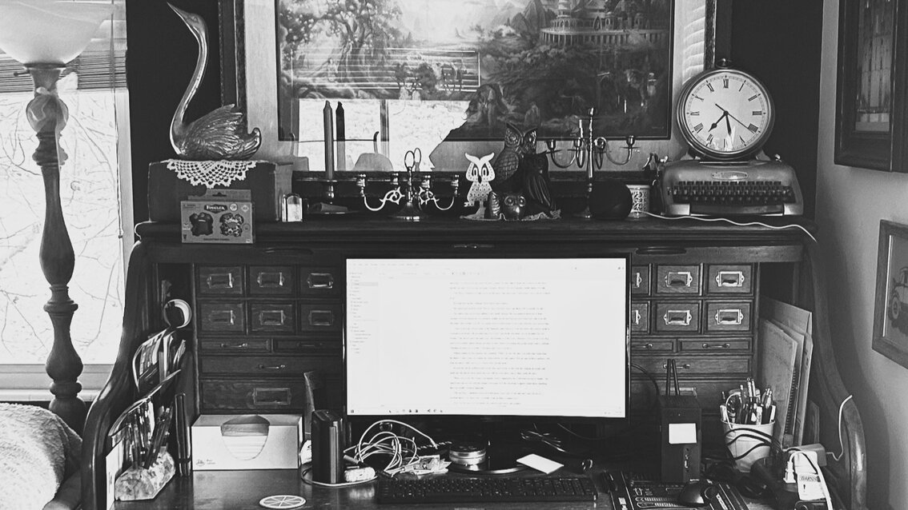

The Sunheart Solution is a middle-grade fantasy set on earth but with a portal to a fantasy world called Spindle. The Sunheart Solution is the story of Wexford Holly, almost fourteen years old, who wants nothing more than to visit the snow with his mother during winter break. But when his plans backfire and his mom ends up in a chilly, otherworldly coma, he must figure out whether to trust the newfound family who say they are trying to help or find the solution to the problem himself.

Thanks for visiting!
I hope you enjoy getting to know a little bit about my stories.

The Golden Goblets is a murder mystery set in the present. It's the story of Briony Hunter, wry, down-to-earth, and single, whose life is devoted to keeping her sisters, aunt, and young niece happy and their heavily mortgaged inn afloat. When an old friend shows up in need of a roof over his head just in time to help solve a murder, Briony must decide whether she can trust the man whose father was part of her own parents' downfall.